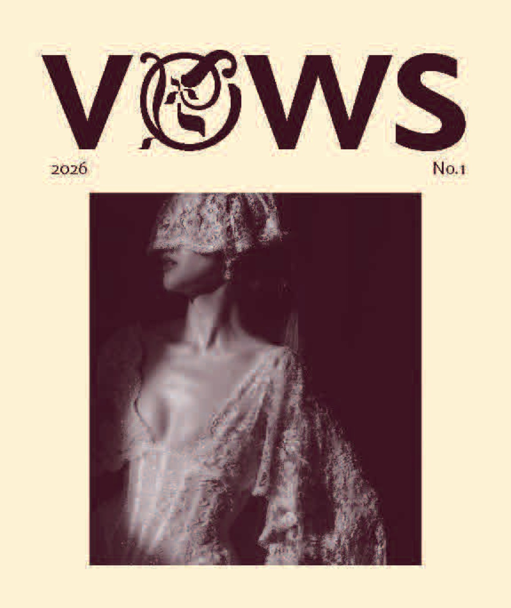
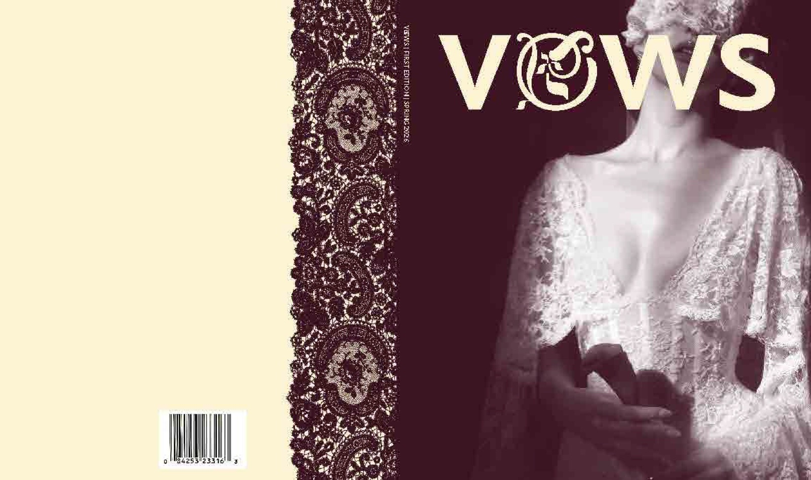
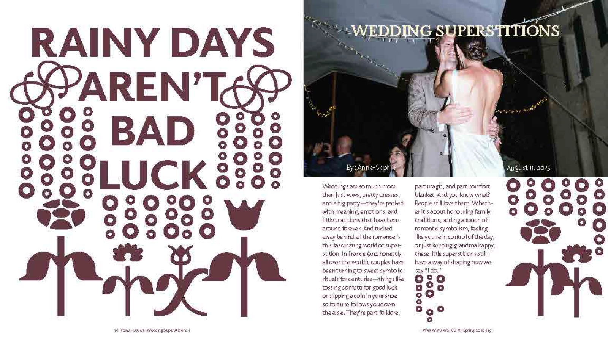
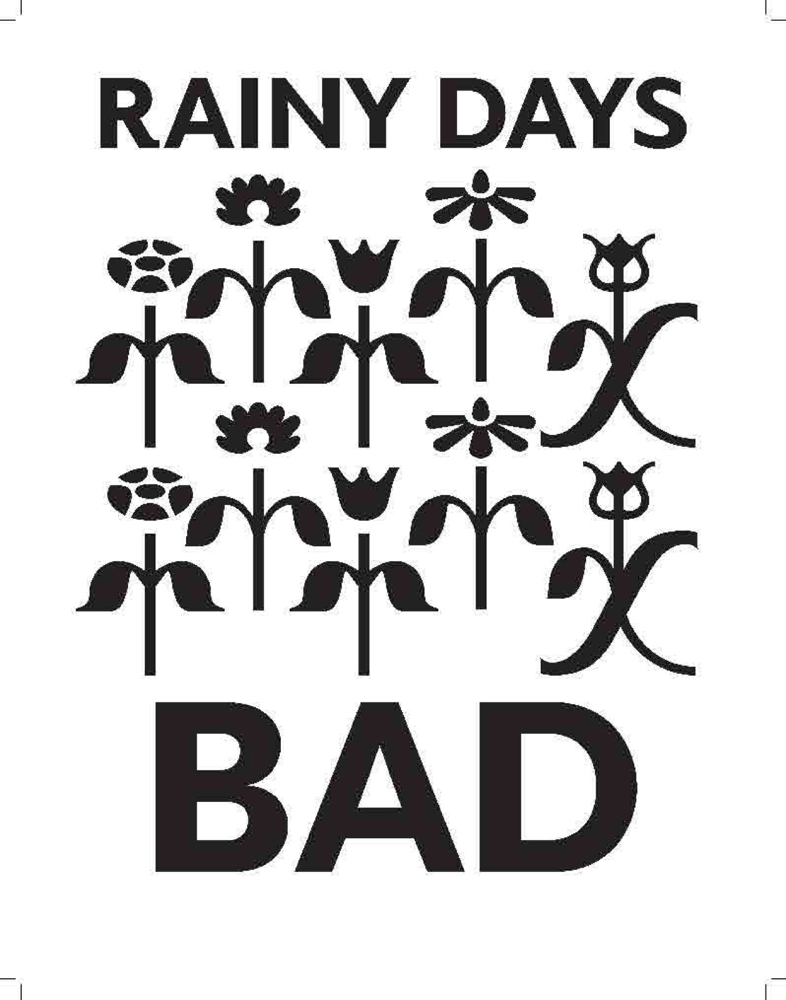
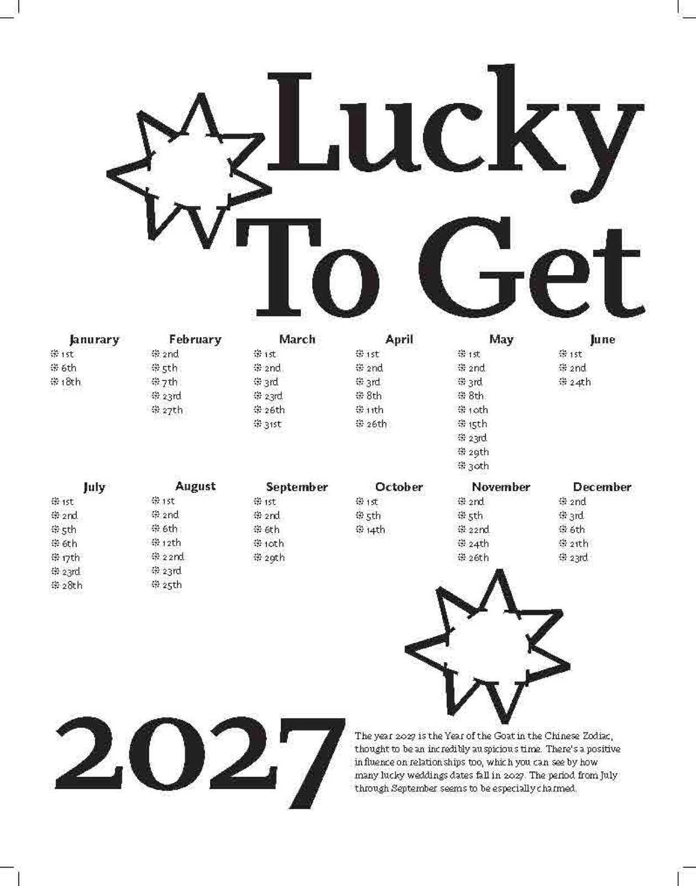
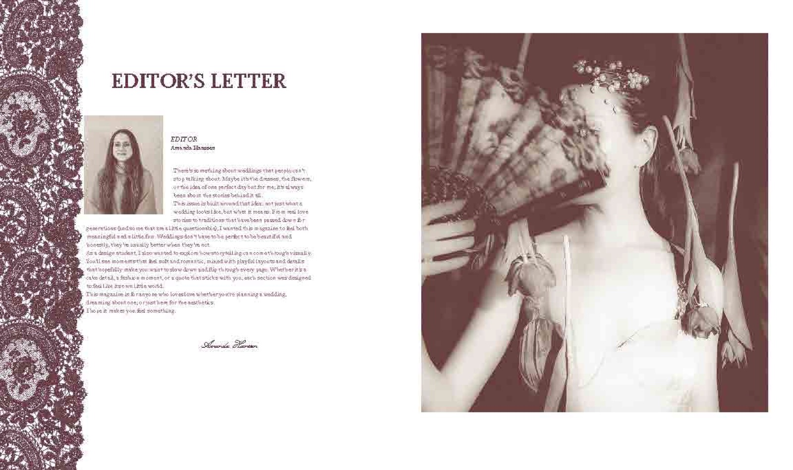
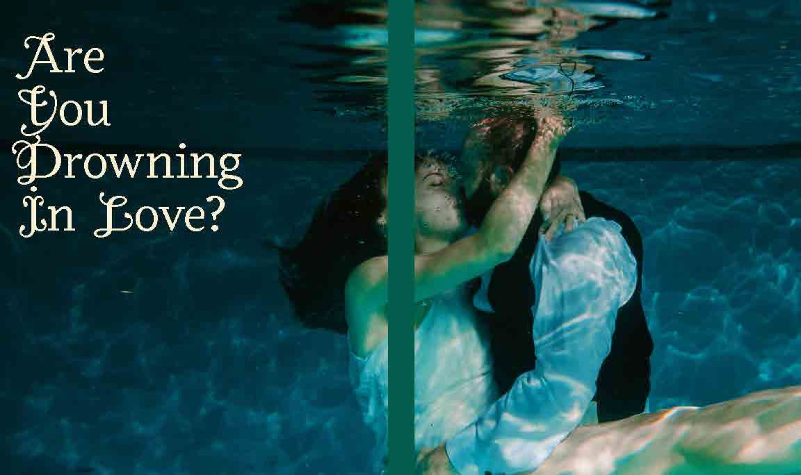

Case study · Editorial design · 2026
A magazine about modern, nontraditional weddings for Gen Z and women in their 20s and 30s, later rebuilt as an interactive website.
My role
Editorial design, typography, layout and web design
Timeline
10 weeks · Spring 2026
Course
Typography III & Information Architecture, with Katherine Hughes & Rita Ferreira
Tools
Figma, InDesign, Illustrator, Photoshop


The idea
Five keywords guided every choice: nontraditional, editorial, bold, playful and expressive. Instead of luxury and perfection, the stories cover real couples, real budgets and real-life celebrations.

Cover, spine, front matter, features, an interview, a visual essay and departments, printed and bound by hand.
Web
Seven pages with scroll-paced storytelling, full-bleed images, oversized pull quotes and a lace motif.
Process
Week 1
Theme, audience, keywords and a flexible grid.
Week 2
Type galleys comparing headlines, body text and captions.
Week 3
Critique moved the format from 10 × 13 to a more intimate 8 × 9.5 in.
Weeks 4–5
Full text, front matter, cover and spine; printed, bound and trimmed.
Weeks 6–10
Sitemap, wireframes, then scroll-based storytelling.


Outcome
Smaller felt more intimate and personal. The format changes how a story reads.
VOWS became one complete system instead of separate layouts. Moving it to the screen meant rethinking pacing, scale and readability for long stories.


Next project
The Bench Film Festival →